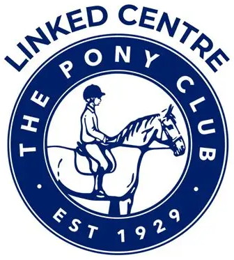

Tests & achievement badges
Work towards Pony Club tests and achievement badges covering both riding and horse and pony care, building real skills step by step.
Tullymurry is a Pony Club Linked Centre, so our riders can enjoy the Pony Club through our riding school.
We are proud to be one of the riding centres across the UK linked to The Pony Club through its Linked Riding Centre scheme.
Being a Linked Centre means riders who learn with us can become Pony Club Centre Members and enjoy many of the same opportunities as Pony Club branch members: working towards Pony Club tests and achievement badges, and entering Pony Club competitions, all through our riding school.
If your child rides with us and would like to get involved, just ask and we'll help you get started.
Ask us about Centre Membership
Work towards Pony Club tests and achievement badges covering both riding and horse and pony care, building real skills step by step.
Centre members can take part in regional and national Pony Club competitions, including the Blue Cross Care Competition, the National Quiz and The Pony Club Championships.
Pony Club coaching at a Linked Centre comes with safeguarding training, enhanced DBS checks, first aid qualifications and regular Pony Club coaching development.
As a Linked Centre we're supported by a regional Pony Club Centre Coordinator and connected to hundreds of centres across the UK.
Find out more about the scheme on The Pony Club website.
Tullymurry is also a local base for Riding for the Disabled, giving riders of all abilities the chance to enjoy the benefits of horses and riding. Please get in touch to find out more.
Get in touchLessons to suit all levels, for riders aged 6 and above.